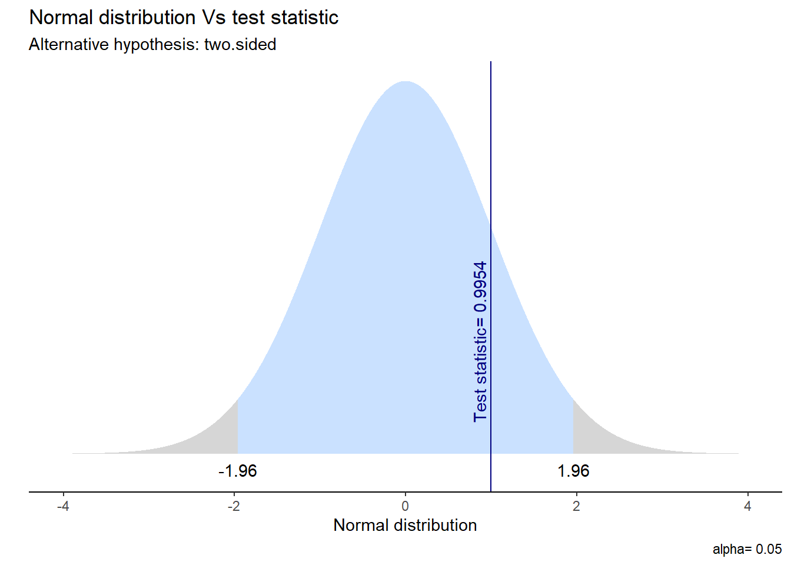

library(pacman)
pacman::p_load(tidyverse, # colección de paquetes para manipulación de datos
car, # para recodificar
psych, # para analizar datos
sjmisc, # para analizar datos
# srvyr, # para estimación de IC y ponderadores
# Publish, # para IC
kableExtra) # para presentación de tablas
options(scipen = 999) # para desactivar notacion cientifica
rm(list = ls()) # para limpiar el entorno de trabajoPráctico 4. Inferencia Estadística y Curva Normal
Metodología Cuantitativa Avanzada - Magíster en Ciencias Sociales
Objetivo de la práctica
El objetivo de esta guía práctica es continuar profundizando en la inferencia estadística, en particular en .
- Aplicar pruebas de hipótesis de diferencia de medias.
- Aplicar pruebas de hipótesis direccionales.
- Aplicar inferencia estadística a proporciones.
- Emplear la correlación en contexto de inferencia.
Recursos de la práctica
En esta práctica trabajaremos con un subconjunto de datos previamente procesados de la Encuesta de Caracterización Socioeconómica (CASEN) del año 2022, elaborada por el Ministerio de Desarrollo Social y Familia. Para este ejercicio, obtendremos directamente esta base desde internet. No obstante, también tienes la opción de acceder a la misma información a través del siguiente enlace: CASEN 20222. Desde allí, podrás descargar el archivo que contiene el subconjunto procesado de la base de datos CASEN 2022.
Test de hipótesis
En inferencia, las pruebas de hipótesis (test de hipótesis, contraste de hipótesis) nos ayudan a determinar si el resultado que obtenemos en nuestra muestra es un efecto real/extensible a la población o un error de muestreo. Esta es una lista de cinco pasos lógicos para enfrentarnos a la inferencia estadística:
| Paso | Detalle |
|---|---|
| 1 | Formula \(H_0\) y \(H_A\) y estipula la dirección de la prueba |
| 2 | Calcula el error estándar (SE) |
| 3 | Calcula el valor estimado de la prueba (ej: Z o t) |
| 4 | Especifica el valor crítico de la prueba |
| 5 | Contrasta el valor estimado con el valor crítico e intrepreta los resultados |
Además de estos 5 pasos también existe la posibilidad de calcular un intervalo de confianza, que acompañe la precisión de nuestra estimación.
Pruebas de dos colas o una cola
En estadística, la formulación de hipótesis que implica dos variables (o la comparación de grupos) busca determinar si existen diferencias en una variable entre grupos y, de ser el caso, evaluar si esta diferencia es estadísticamente significativa.
Existen los contrastes de hipótesis sobre diferencias entre grupos, también se les llama hipótesis de dos colas.
Prueba de dos colas
Contrastamos la hipótesis nula (o de trabajo) de no diferencias entre grupos: \[ H_{0}: \mu_{1} - \mu_{2} = 0 \] En relación a una hipótesis alternativa sobre diferencias entre grupos: \[ H_{A}: \mu_{1} - \mu_{2} \neq 0 \]
Sin embargo, también podemos plantear hipótesis respecto a que el valor de cierto parámetro para un grupo puede ser mayor o menor al de otro grupo. A esto se le conoce como hipótesis de una cola.
Prueba de una cola
\[ H_{0}: \mu_{0} ≥ \mu_{1} ; \mu_{0} ≤ \mu_{1}\]
\[ H_{A}: \mu_{0} > \mu_{1} \]
\[ H_{A}: \mu_{0} < \mu_{1} \]
Test de hipótesis para diferencia de medias
Primero, carguemos las librerías necesarias:
Vamos a testear la siguiente hipótesis:
- \(H_a\): existen diferencias de edad entre hombres y mujeres
Y su correspondiente hipótesis nula:
- \(H_0\): no existen diferencias de edad entre hombres y mujeres
Generación de datos (muestra) y descriptivos:
muestra <- data.frame(edad=c(33,35,23,32,24,25,29,31,32,31),
sexo=c(1,1,2,1,2,2,2,1,1,1))
mean(muestra$edad)[1] 29.5muestra$sexo <- as.factor(muestra$sexo)
muestra %>%
group_by(sexo) %>%
summarise(media=mean(edad)) # A tibble: 2 × 2
sexo media
<fct> <dbl>
1 1 32.3
2 2 25.2Gráfico descriptivo:
muestra %>%
group_by(sexo) %>%
summarise(media=mean(edad)) %>%
ggplot(aes(x=sexo, y=media)) +
geom_point() +
ylim(25,35) +
labs(title = "Medias de edad para hombres y mujeres, muestra 3",
x = "Sexo",
y = "Media edad")
Prueba t de diferencia de medias:
t.test(edad ~ sexo,data=muestra)
Welch Two Sample t-test
data: edad by sexo
t = 4.8799, df = 4.33, p-value = 0.006658
alternative hypothesis: true difference in means between group 1 and group 2 is not equal to 0
95 percent confidence interval:
3.171534 10.995133
sample estimates:
mean in group 1 mean in group 2
32.33333 25.25000 Lo principal en este output es el valor p, que es la probabilidad de error al rechazar la hipótesis nula. En este caso, \(p = 0.006658\), que es menor a un nivel de confianza convencional como \(\alpha = 0.05\), incluso es menor que un nivel más exigente como el \(\alpha = 0.01\). Por lo tanto, rechazamos la hipótesis nula de igualdad de medias con un 99% de confianza, hay suficiente evidencia estadística para sostener que el promedio de edad de hombres y mujeres es diferente.
Cálculo paso a paso de estadístico t
En esta sección se realizará el cálculo paso a paso del estadístico \(t\) del ejemplo anterior para demostrar cómo se origina la información que aparece en el output de R.
La fórmula de t:
\(t=\frac{(\bar{x}_1-\bar{x}_2)}{\sqrt{\frac{s_1²}{\sqrt{n_1}}+\frac{s_2²}{\sqrt{n_2}} }}\)
Donde en la parte superior se encuentra la diferencia de medias entre dos grupos, y en la inferior el error estándar de t.
Pasos:
- Se calcula la diferencia de medias
- Se calcula el error estándar de la diferencia de medias
- Cálculo del valor t
- Se fija un \(\alpha\) (usualmente 0.05) para rechazar \(H_0\), y se busca el valor crítico asociado a este \(\alpha\) (en una tabla de valores t, o en R)
- Si nuestro t es superior al valor crítico, se rechaza \(H_0\)
Paso 1: Calculamos la diferencia de medias \((\bar{x}_1-\bar{x}_2)\)
muestra %>%
dplyr::group_by(sexo=sjlabelled::as_label(sexo)) %>% # se agrupan por la variable categórica y se usan sus etiquetas con as_label
dplyr::summarise(Obs.=n(),Promedio=mean(edad, na.rm=TRUE),SD=sd(edad, na.rm=TRUE)) %>% # se agregan las operaciones a presentar en la tabla
kable(format = "markdown")| sexo | Obs. | Promedio | SD |
|---|---|---|---|
| 1 | 6 | 32.33333 | 1.505545 |
| 2 | 4 | 25.25000 | 2.629956 |
dif_medias <- 32.333 - 25.250
dif_medias[1] 7.083Paso 2: Calculamos el error estándar de la diferencia de medias: \(\sqrt{\frac{s_1²}{\sqrt{n_1}}+\frac{s_2²}{\sqrt{n_2}}}\)
muestra_h <- muestra %>% filter(sexo==1)
muestra_m <- muestra %>% filter(sexo==2)
s_h <- sd(muestra_h$edad)
n_h <- length(muestra_h$edad)
s_m <- sd(muestra_m$edad)
n_m <- length(muestra_m$edad)
ee <- sqrt((s_h^2)/n_h + (s_m^2)/n_m)
ee[1] 1.451532Paso 3: Cálculo del valor t
te <- dif_medias/ee
te[1] 4.879673Paso 4: Fijamos un \(\alpha\) y se busca el valor crítico de t asociado al \(\alpha\). En este caso utilizaremos el valor usual de \(\alpha = 0.05\).
tt <- qt(0.05/2,df=9,lower.tail=F)
tt[1] 2.262157Paso 5: test de hipótesis
Según la distribución t, el valor crítico para poder rechazar \(H_0\) con un 95% de confianza es 2.26. El t calculado con información de la muestra (o t empírico) es 4.87. Este valor es superior al t crítico, por lo tanto se rechaza \(H_0\) con un 95% de confianza, o una probabilidad de error p<0.05.
Ejemplo casos reales
Comencemos por preparar nuestros datos. Iniciamos cargando las librerías necesarias.
pacman::p_load(tidyverse, # Manipulacion datos
sjPlot, #tablas
confintr, # IC
gginference, # Visualizacion
rempsyc, # Reporte
broom) # Varios
options(scipen = 999) # para desactivar notacion cientifica
rm(list = ls()) # para limpiar el entorno de trabajoCargamos los datos directamente desde internet.
load(url("https://github.com/cursos-metodos-facso/datos-ejemplos/raw/main/proc_casen.RData")) #Cargar base de datosA continuación, exploramos la base de datos proc_casen.
names(proc_casen) # Nombre de columnas [1] "id_vivienda" "folio" "id_persona" "hogar"
[5] "nucleo" "varunit" "varstrat" "expr"
[9] "edad" "sexo" "educ" "activ"
[13] "y1" "ytrabajocor" "pobreza_multi_5d" "o15"
[17] "qaut" "fdt" "ocupado" "desocupado"
[21] "inact" "hijo" "n_educ" "universitaria"
[25] "tipo_ocup" "ss_salud" "ayuda_moverse" "ayuda_thogar"
[29] "disc_fisica" dim(proc_casen) # Dimensiones[1] 202111 29Contamos con 24 variables (columnas) y 202.111 observaciones (filas).
Evaluemos si el promedio de ingresos del trabajo de las mujeres es distinto al de los hombres en Chile en el 2022.
Apliquemos nuestros cinco pasos para inferencia.
- Formulamos nuestras hipótesis y dirección de la prueba:
\(H_{0}\): \(\mu_{hombres}\) \(-\) \(\mu_{mujeres}\) \(=\) \(0\)
\(H_{A}\): \(\mu_{hombres}\) \(-\) \(\mu_{mujeres}\) \(\neq\) \(0\)
- Calcula el error estándar (SE) para diferencia de medias:
ocupados <- proc_casen %>%
filter(ocupado == 1) %>%
na.omit() # subset de datos solo con personas ocupadas
datos_t <- ocupados %>%
group_by(sexo) %>%
summarise(media = mean(ytrabajocor, na.rm = T),
ds = sd(ytrabajocor, na.rm = T),
n = n())
datos_t# A tibble: 2 × 4
sexo media ds n
<dbl> <dbl> <dbl> <int>
1 1 578107. 388352. 64
2 2 516235. 405302. 109Obtenemos la diferencia de medias (\(\bar{x_1}\) - \(\bar{x_2}\))
dif_medias <- 817688.2 - 674428.3
dif_medias[1] 143259.9Ahora, calculamos el error estándar.
s_h <- 837710.9
s_m <- 638044.1
n_h <- 32019
n_m <- 26313
se_dif <- sqrt((s_h^2)/n_h + (s_m^2)/n_m)
se_dif[1] 6114.607- Calcula el valor estimado de la prueba (t para diferencia de medias):
t_stat <- dif_medias/se_dif
t_stat[1] 23.42912- Especifica el valor crítico:
df <- n_h + n_m - 2 # definimos grados de libertad
t_critico <- qt(p = 0.05/2, df, lower.tail = FALSE)
t_critico[1] 1.960005- Contrasta el valor estimado con el crítico e interpreta los resultados:
t_stat > t_critico[1] TRUEComparamos el valor estimado con el valor crítico para dos colas. Por tanto, nuestro valor estimado queda dentro de la zona de rechazo de \(H_0\). En consecuencia, podemos decir que:
La prueba T que evalúa la diferencia de medias entre el ingreso del trabajo según sexo sugiere que el efecto es positivo y estadísticamente signficativo (diferencia = 143.260, t(58004.33) = 23.43, p < .001). Por tanto, rechazamos la \(H_{0}\) sobre igualdad de medias con un 95% de confianza, existiendo evidencia a favor de nuestra \(H_{A}\) ya que hay diferencias salariales significativas entre hombres y mujeres.
- Y el cálculo directo en R:
t_results <- t.test(ocupados$ytrabajocor ~ ocupados$sexo,
alternative = "two.sided")
# stats.table <- tidy(t_results, conf_int = T)
# nice_table(stats.table, broom = "t.test")Visualicemos la distribución de esta prueba y su zona de rechazo.
ggttest(t_results)
Además, podemos calcular un intervalo de confianza que acompaña nuestra estimación. En este caso, vemos que el IC para la diferencia de medias oscila entre [131.275 - 155.245] y no contiene el cero, por lo que podemos rechazar la hipótesis nula.
Pruebas de hipótesis direccionales para la media
Tomando como ejemplo el trabajo de la ganadora del Premio Nobel de Economía 2023 Claudia Goldin, comprobemos si los ingresos de las mujeres trabajadoras que no tienen hijos es mayor al ingreso de las mujeres trabajadoras que sí tienen hijos. Por tanto, usaremos prueba \(t\) para diferencia de medias.
Apliquemos nuestros 5 pasos.
- Formulamos nuestras hipótesis y dirección de la prueba:
En donde 0 = sin hijos y 1 = con hijos;
\(H_{0}\): \(\mu_{0}\) \(≤\) \(\mu_{1}\)
\(H_{A}\): \(\mu_{0}\) \(>\) \(\mu_{1}\)
- Calcula el error estándar (SE) para diferencia de medias:
goldin_data <- proc_casen %>%
filter(ocupado == 1 & sexo == 2) %>%
na.omit()# creamos subset con solo mujeres ocupadas
datos_t <- goldin_data %>%
group_by(hijo) %>%
summarise(media = mean(ytrabajocor, na.rm = T),
ds = sd(ytrabajocor, na.rm = T),
n = n())
datos_t# A tibble: 2 × 4
hijo media ds n
<dbl> <dbl> <dbl> <int>
1 0 586741. 441974. 9
2 1 509889. 403640. 100En este caso, obtenemos la diferencia de medias (\(\bar{x}_0 - \bar{x}_1\) ).
dif_medias <- 729850.1 - 655087.8
dif_medias[1] 74762.3Y luego su error estándar.
s_0 <- 659400.5
s_1 <- 629290.5
n_0 <- 6807
n_1 <- 19506
se_dif <- sqrt((s_0^2)/n_0 + (s_1^2)/n_1)
se_dif[1] 9174.886- Calcula el valor estimado de la prueba (t para diferencia de medias):
t_stat <- dif_medias / se_dif
t_stat[1] 8.148581- Especifica el valor crítico:
df <- n_0 + n_1 - 2 # definimos grados de libertad
t_critico <- qt(p = 0.05, df, lower.tail = FALSE)
t_critico[1] 1.644912- Contrasta el valor estimado con el crítico e interpreta los resultados:
t_stat > t_critico[1] TRUELa prueba T que evalúa la diferencia de medias entre el ingreso del trabajo y tener hijos en las mujeres ocupadas sugiere que el efecto es positivo y estadísticamente signficativo (diferencia = 74.762, t(11417.34) = 8.15, p < .05). Por tanto, con un 95% de confianza, rechazamos la \(H_{0}\) ya que existe evidencia a favor de nuestra \(H_{A}\) respecto a que el ingreso de las mujeres sin hijos es mayor al ingreso de las mujeres con hijos.
- Y el cálculo en R.
t_results_goldin <- t.test(goldin_data$ytrabajocor ~ goldin_data$hijo,
alternative = "greater") # indicamos la direccion de la prueba
# stats.table <- tidy(t_results_goldin, conf.int = T)
# nice_table(stats.table, broom = "t.test") Visualicemos la distribución de esta prueba y su zona de rechazo.
ggttest(t_results_goldin)En este caso, el IC del 95% es (59.670, Inf), donde “Inf” representa infinito. Esto significa que podemos estar 95% seguros de que la diferencia real entre las medias está por encima de 59.670. En otras palabras, con alta confianza, podemos afirmar que la media del “grupo 0” es significativamente mayor que la del “grupo 1”.
Inferencia para proporciones
Cuando queremos realizar inferencia para variables categóricas, generlamente utilizamos pruebas que comparan proporciones de una variable de interés entre grupos.
El test de proporciones es una prueba estadística utilizada para determinar si hay una diferencia significativa entre dos proporciones (tasas) en dos grupos. Se basa en datos categóricos, en donde se cuentan los eventos “exitosos” o “positivos” en cada grupo de comparación, por sobre el total de eventos.
Evaluamos si existen diferencias entre hombres y mujeres en la proporción de encontrarse en situación de pobreza multidimensional.
pobreza <- proc_casen[1:300,] # creamos un subsample solo como ejemplo
sjPlot::sjt.xtab(pobreza$pobreza_multi_5d, pobreza$sexo, show.col.prc = T)| situación de pobreza multidimensional con entorno y redes (5 dimensiones) |
Sexo | Total | |
|---|---|---|---|
| 1. Hombre | 2. Mujer | ||
| No pobreza | 91 67.9 % |
115 71 % |
206 69.6 % |
| Pobreza | 43 32.1 % |
47 29 % |
90 30.4 % |
| Total | 134 100 % |
162 100 % |
296 100 % |
| χ2=0.199 · df=1 · φ=0.033 · p=0.656 | |||
Formulemos nuestras hipótesis:
\(H_0\): \(p_{hombres}\) \(=\) \(p_{mujeres}\)
\(H_A\): \(p_{hombres}\) \(\neq\) \(p_{mujeres}\)
Ahora, creemos un objeto llamado xtab que contendrá la frecuencia de casos exitosos (“pobreza”) sobre el total de casos para cada grupo.
xtab <- as.table(rbind(c(43, 47),c(91, 115)))
dimnames(xtab) <- list(
pobreza = c("si", "no"),
sexo = c("hombre", "mujer")
)Luego, aplicamos la función prop.test() para evaluar nuestra hipótesis.
prop_results <- prop.test(xtab, alternative = "two.sided")
# stats.table <- tidy(prop_results, conf.int = T)
# nice_table(stats.table, broom = "prop.test")¿Y cómo reportamos esto?:
Esta prueba que evalúa la diferencia de proporciones entre encontrarse en situación de pobreza según sexo sugiere que el efecto es positivo y estadísticamente no significativo (\(X^2\)= 0.19887, p = 0.6556). Por tanto, no se rechaza la \(H_{0}\) sobre igualdad de proporciones ya que no existe suficiente evidencia para concluir que las proporciones en los dos grupos son significativamente diferentes.
Además de lo anterior, vemos que en este caso el IC de diferencia de proporciones sí contiene el cero, por lo que no podemos rechazar la hipótesis nula.
Inferencia en correlación
En el contexto de la inferencia, la correlación nos permite determinar si existe (o no) una asociación estadísticamente significativa entre dos variables. En ese sentido, la lógica del contraste de hipótesis usando correlación es:
Hipótesis en correlación
Contrastamos la hipótesis nula (o de trabajo) de no asociación entre variables: \[ H_{0}: \rho = 0 \]
En relación a una hipótesis alternativa sobre la existencia una asociación significativa entre variables:
\[ H_{A}: \rho \neq 0 \]
Tomemos por ejemplo la siguiente pregunta de investigación: ¿en qué medida el nivel educacional alcanzado por las personas se relaciona con sus ingresos en Chile en el 2022?
Formulemos nuestra hipótesis:
\(H_{0}\): \(cor(educ,ingreso)\) \(=\) \(0\)
\(H_{A}\): \(cor(educ,ingreso)\) \(\neq\) \(0\)
Obtengamos el coeficiente de correlación \(r\) de Pearson entre el nivel educacional alcanzado y los ingresos de las personas en Chile en 2022. Para esto usaremos solamente observaciones completas (listwise).
cor_results <- cor.test(proc_casen$educ, proc_casen$ytrabajocor,
method = "pearson",
use = "complete.obs")
# stats.table <- tidy(cor_results)
# nice_table(stats.table, broom = "cor")Ya sabemos cómo interpretar una correlación, ahora usemos este resultado para probar nuestra hipótesis:
El coeficiente de correlación de Pearson entre nivel educativo e ingresos es positivo, estadísticamente significativo (r = 0.38, p < .001) y moderado de acuerdo con las recomendaciones de Cohen (1988). Por tanto, con un 95% de confianza se puede rechazar la \(H_{0}\) de no asociación entre variables, existiendo evidencia a favor de la \(H_{A}\) sobre una asociación significativa entre educación e ingresos.